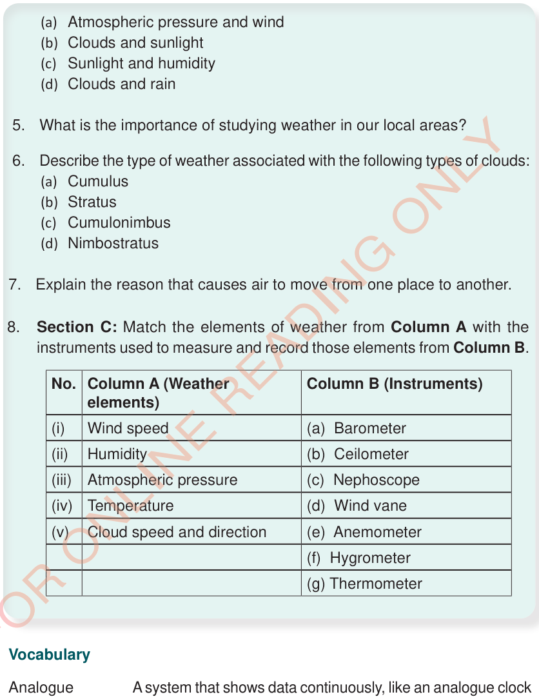

8.Section C: Match the elements of weather from Column A with the instruments used to measure and record those elements from Column B.
Wind speed
Humidity
Atmospheric pressure
Temperature
Cloud speed and direction
(a) Barometer
(b) Ceilometer
(c) Nephoscope
(d) Wind vane
(e) Anemometer
(f) Hygrometer
(g) Thermometer
| No. | Column A (Weather elements) | Column B (Instruments) |
| (i) | Wind speed | (a) Barometer |
| (ii) | Humidity | (b) Ceilometer |
| (iii) | Atmospheric pressure | (c) Nephoscope |
| (iv) | Temperature | (d) Wind vane |
| (v) | Cloud speed and direction | (e) Anemometer |
| (f) Hygrometer | ||
| (g) Thermometer |
Vocabulary
| Analogue | A system that shows data continuously, like an analogue clock with moving hands, unlike a digital clock that uses numbers. |
| Droplets | Tiny round drops of liquid that form when liquid spreads into the air like rain droplets. |